Ficha Técnica
Autor: Tite Kubo
Baseado em: Bleach, mangá de Tite Kubo
Estúdio: Pierrot
Duração: aproximadamente 24 minutos por episódio
Status: Última parte em produção
Classificação

| AVALIAÇÃO IMDb |
|---|
| 9,0/10 (110 mil reviews) |
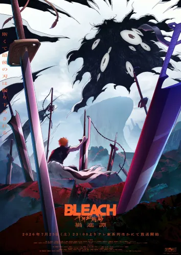
Tipo: Anime / Série de televisão | Gêneros: Ação, Aventura, Fantasia, Shōnen, Sobrenatural
Após anos de relativa paz, a Sociedade das Almas é surpreendida pelo surgimento do Wandenreich, um poderoso
exército de Quincies liderado por Yhwach. Com a declaração
de uma nova guerra contra os
Shinigami, antigos
segredos escondidos há mil anos começam a vir à tona.
Autor: Tite Kubo
Baseado em: Bleach, mangá de Tite Kubo
Estúdio: Pierrot
Duração: aproximadamente 24 minutos por episódio
Status: Última parte em produção
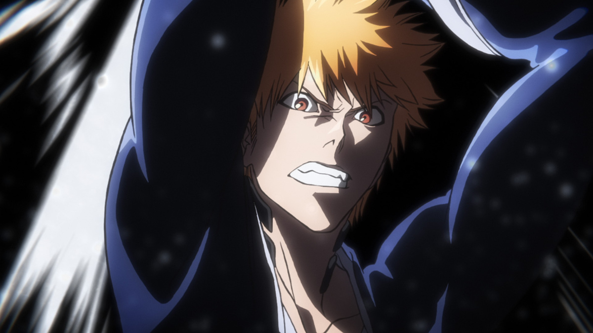
- Preview do Episódio
Sinopse: Hollows começam a desaparecer misteriosamente em grande quantidade, causando
preocupação na Soul Society. Em Karakura, Ichigo e seus amigos salvam dois novos
Shinigamis de um
ataque.
Pouco depois, um misterioso inimigo aparece diante de Ichigo, enquanto a Soul Society também sofre uma
invasão inesperada.
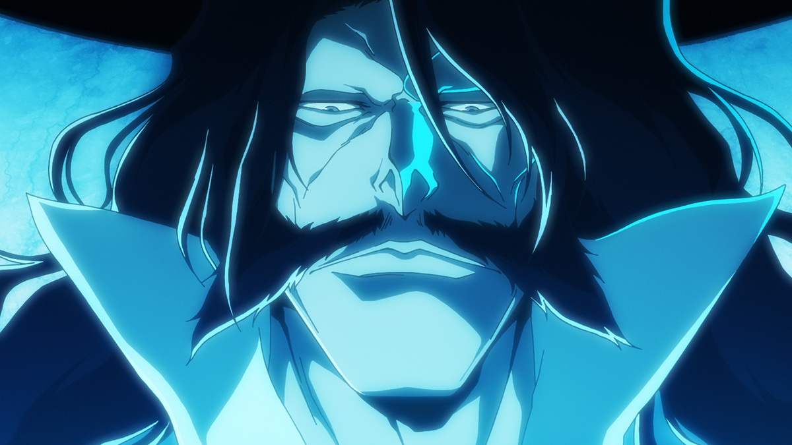
- Preview do Episódio
Sinopse: Ichigo descobre que o Hueco Mundo também está sendo atacado por uma força
desconhecida. Nel e Pesche aparecem pedindo sua ajuda, levando Ichigo e seus companheiros
a se
prepararem
para viajar ao Hueco Mundo, onde a ameaça dos Quincy começa a se revelar.
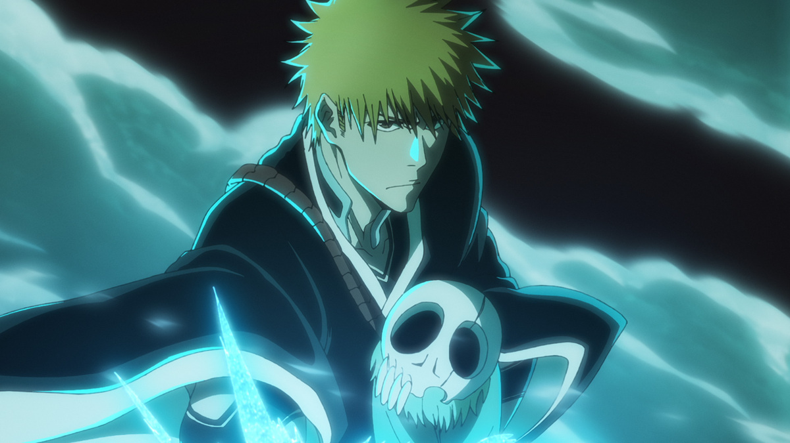
- Preview do Episódio
Sinopse: No Hueco Mundo, Ichigo enfrenta Quilge Opie e descobre que os invasores são Quincy.
Ao mesmo tempo, os capitães da Soul Society chegam à mesma conclusão e se preparam
para a guerra
anunciada
por Yhwach e pelo Wandenreich.
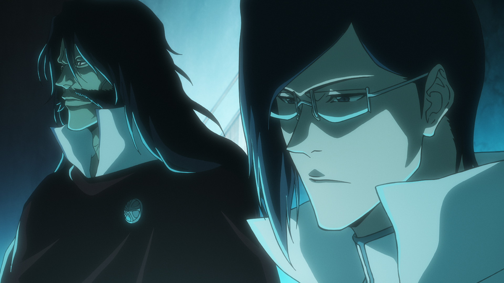
- Preview do Episódio
Sinopse: Enquanto Ichigo continua seu treinamento no Palácio Real, Yhwach reúne os
Sternritter e anuncia seu sucessor: Uryu Ishida. A decisão surpreende os Quincy e causa tensão dentro
do
próprio Wandenreich.
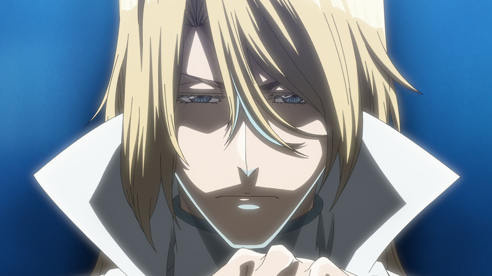
- Preview do Episódio
Sinopse: O Wandenreich inicia sua segunda invasão. A própria Seireitei é tomada pelas
sombras do império Quincy, e os Sternritter atacam os Shinigamis. Toshiro Hitsugaya e Rangiku enfrentam
Bazz-B sem poder contar normalmente com sua Bankai.
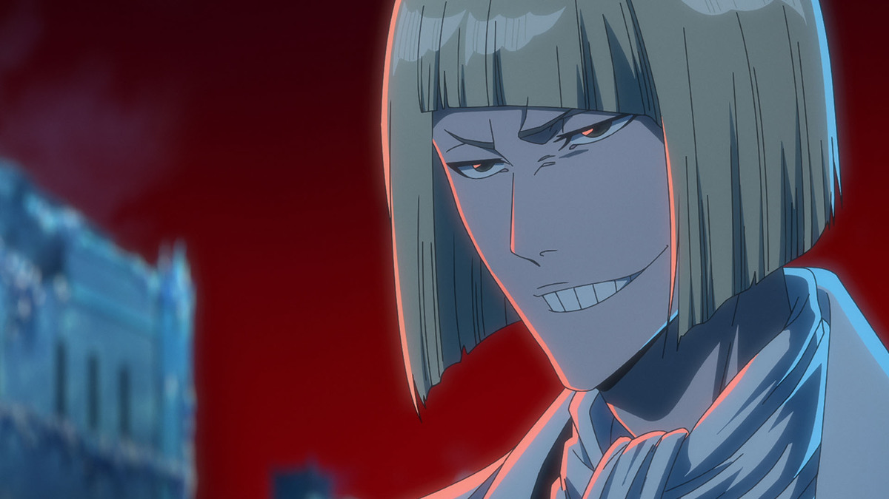
- Preview do Episódio
Sinopse: Os capitães continuam em desvantagem contra os Sternritter, mas Urahara encontra
uma possível forma de recuperar as Bankais roubadas. Sua descoberta começa a mudar o rumo da segunda
invasão, enquanto Hitsugaya e Soi Fon enfrentam seus respectivos adversários.
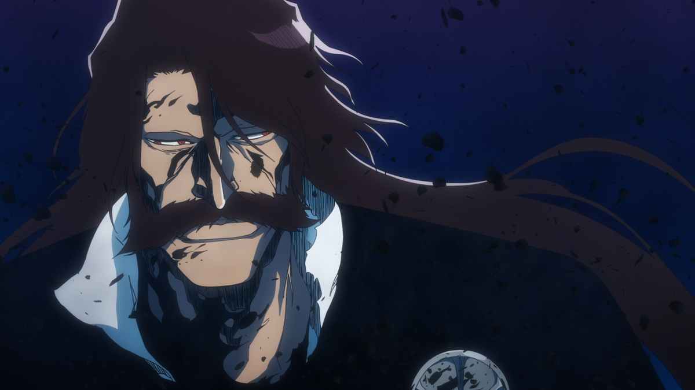
- Preview do Episódio
Sinopse: A luta entre a Divisão Zero e a guarda de elite de Yhwach chega a um novo nível.
Senjumaru Shutara utiliza sua Bankai contra os Schutzstaffel, enquanto Ichibe Hyosube enfrenta diretamente
Yhwach e tenta apagar seu poder e até mesmo seu nome.
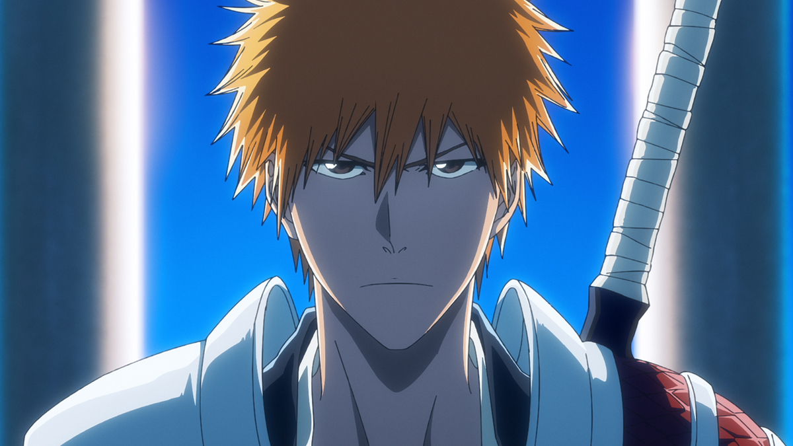
- Preview do Episódio
Sinopse: Ichigo chega ao Palácio do Rei das Almas determinado a impedir Yhwach. Agora com
suas duas Zangetsu, ele enfrenta o imperador Quincy, que recuperou o poder de The Almighty e pretende
concretizar seu plano para os três mundos.
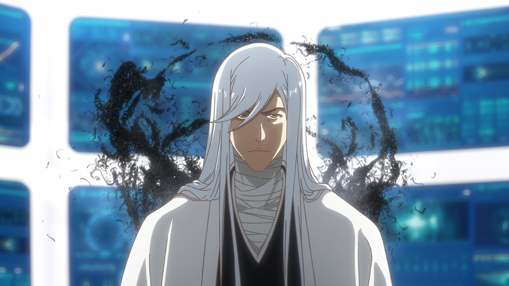
- Preview do Episódio
Sinopse: Ichigo tenta retirar a espada que atravessa o Rei das Almas, mas seu sangue Quincy
reage à presença de Yhwach e o leva a ferir o próprio Rei. Com os três mundos começando a entrar em colapso,
Jushiro Ukitake decide colocar em prática um último recurso.
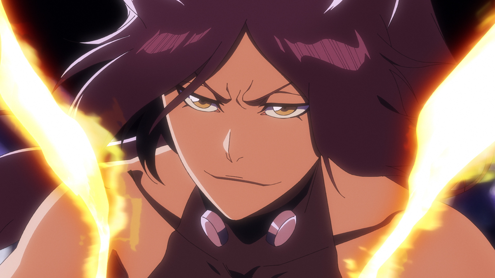
- Preview do Episódio
Sinopse: Ichigo e Uryu voltam a lutar do mesmo lado. Ichigo, Orihime e Chad seguem em
direção ao trono de Yhwach, enquanto Uryu permanece para enfrentar Haschwalth. Em outra frente, Yoruichi
enfrenta Askin e recebe a ajuda de Kisuke Urahara.
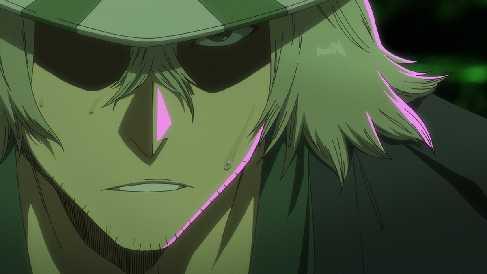
- Preview do Episódio
Sinopse: A batalha contra Askin continua, enquanto Ichigo e Orihime finalmente chegam até
Yhwach. Durante a noite, os poderes de Yhwach e Haschwalth se alternam, criando uma oportunidade
aparentemente favorável para Ichigo — embora Yhwach continue extremamente confiante.
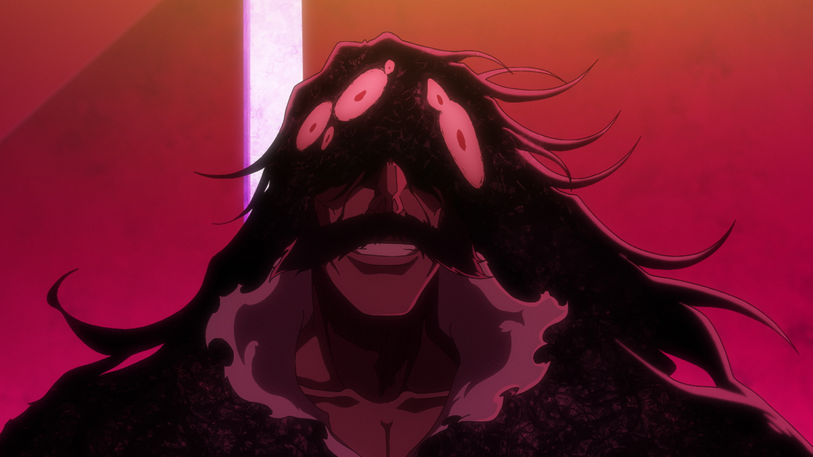
- Preview do Episódio
Sinopse: Depois de absorver o poder do Rei das Almas, Yhwach se torna uma ameaça ainda
maior. Ichigo e Orihime continuam a enfrentá-lo, Uryu procura uma maneira de derrotar Haschwalth
e os
capitães da Soul Society se unem contra o gigantesco Gerard Valkyrie.

- Preview do Episódio | Clique no Preview para Assistir o Episódio
Sinopse: A ameaça de destruição dos Três Mundos se torna uma realidade, enquanto sinais de
ruína se espalham por toda parte. No Castelo do Mundo Verdadeiro, Ichigo enfrenta Yhwach e desperta
o poder
Hollow dentro de si, assumindo uma forma parcialmente Hollow e disparando o poderoso Gran Rey Cero ao
combiná-lo com o Getsuga.